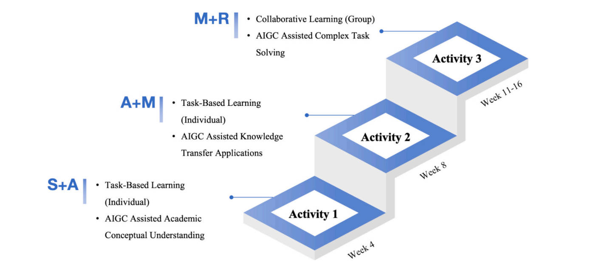

Abstract
The question of how to use artificial intelligence generated content (AIGC) properly to enhance learning among college students is a key concern for contemporary educators. Although previous studies have discussed the influence of AIGC on college teaching and student learning and its functions in this context, there remains a lack of discussions regarding ways of guiding students’ use of AIGC and studies on the specific topic of helping college freshmen use AIGC properly. Based on the substitution, augmentation, modification and redefinition (SAMR) model, this study develops a progressively active teaching framework that integrates AIGC into learning. This framework is used to design learning activities for general education courses targeting freshmen. This exploratory study was conducted in the context of a 16-week course. During the teaching process, AIGC interaction log data and AIGC experience records were collected from students, following which data processing was conducted using the discourse analysis, quantitative statistical analysis, and epistemic network analysis (ENA) methods to obtain the ultimate results of this study: (1) A combination of active teaching with the SAMR model can improve the quality of interactions between students and AIGC; (2) teaching strategies rooted in active learning can enhance students’ ability to use AIGC; and (3) improvements in students’ technical skills strengthen the quality of their interactions with AIGC. This study makes novel contributions to the literature on active learning strategies for teachers and curriculum designers, and it offers practical guidance for educational practitioners and college students regarding the integration of AI technology into both teaching and learning
Research Focus
The study focuses on designing an instructional model that scaffolds students’ AIGC use across different cognitive levels defined by the SAMR framework—Substitution, Augmentation, Modification, and Redefinition. It seeks to understand how teaching interventions can promote higher-order learning behaviors and critical awareness of generative AI technologies.

Methodogy
A qualitative case study was conducted with first-year undergraduates enrolled in a general education course. Students participated in a sequence of activities that integrated AIGC tools such as ChatGPT and image generators into project-based learning. Data were collected through classroom observation, reflective journals, and student-created artifacts. The analysis focused on how students transitioned through different SAMR stages.
Key Finding
Instructional Effectiveness:
The combination of an active instructional approach and the SAMR
(Substitution, Augmentation, Modification, Redefinition) framework is
highly effective in guiding students to utilize Artificial Intelligence
Generated Content (AIGC) more proficiently.
Interaction and Skill Improvement:
This approach significantly improved the quality of student-AIGC interactions
and enhanced students' practical competence, enabling them to transition AIGC
usage from simple replacement (Substitution) to creating new learning experiences
(Redefinition).
Higher-Order Thinking Promotion:
As students utilized AIGC at higher SAMR levels, the study observed a substantial
increase in both the depth of their dialogue and the diversity of their questions,
indicating that the guided use of AIGC fosters higher-order thinking skills..
Implication & Conclusion
The findings highlight the importance of intentional pedagogical design in
AI-integrated education. The SAMR-based approach provides educators with a
scaffold to cultivate student agency, creativity, and metacognitive engagement
with AIGC. It demonstrates that AI tools, when embedded in meaningful learning
contexts, can foster higher-order thinking rather than replace it.
This exploratory case study offers a theoretical and practical model for
integrating AIGC in higher education. By aligning technological affordances
with pedagogical goals, it opens new pathways for developing students’ digital
literacy and creativity in the era of generative AI.